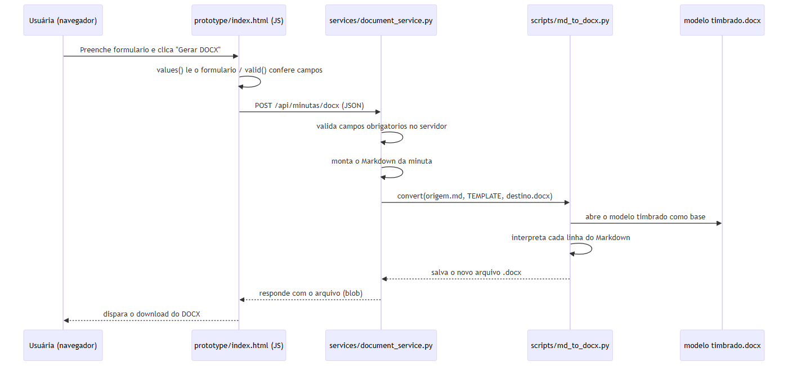

Foi confirmado que o usuário não deve executar comandos no PowerShell para gerar documentos. A geração do DOCX deverá ocorrer por botão dentro do site.
Foi criado um serviço local em services/document_service.py, usando a biblioteca padrão HTTP do Python. O endpoint POST /api/minutas/docx recebe os dados da manifestação, chama o conversor existente e devolve o arquivo DOCX.
127.0.0.1 para desenvolvimento.Conectar o botão do protótipo ao endpoint local e criar a etapa explícita de revisão/aprovação antes da conversão para PDF.
Fluxo completo da geração de DOCX, do clique no protótipo até o download, detalhado em docs/logica-de-programacao.md:

Trecho de services/document_service.py — o endpoint criado nesta sessão:
required = ("cliente", "processo", "finalidade", "fatos", "pedido")
if any(not str(payload.get(field, "")).strip() for field in required):
self.send_error(400, "Campos obrigatórios ausentes")
return
markdown = (f"# Manifestação simples\n\n**Cliente/parte representada:** {payload['cliente']} \n"
f"**Processo:** {payload['processo']}\n\n## Finalidade\n\n{payload['finalidade']}\n\n"
f"## Fatos e informações\n\n{payload['fatos']}\n\n## Pedido ou providência\n\n{payload['pedido']}\n")
with tempfile.TemporaryDirectory(prefix="minuta-") as folder:
base = Path(folder)
source = base / "minuta.md"
output = base / "manifestacao.docx"
source.write_text(markdown, encoding="utf-8")
convert(source, TEMPLATE, output)
content = output.read_bytes()
O servidor repete a validação já feita no navegador (nunca confiar apenas no lado do cliente), monta o Markdown, e usa um diretório temporário (tempfile.TemporaryDirectory) para gerar e ler o DOCX sem deixar arquivos residuais em disco.